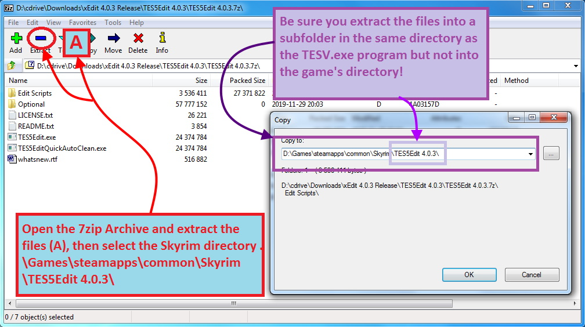
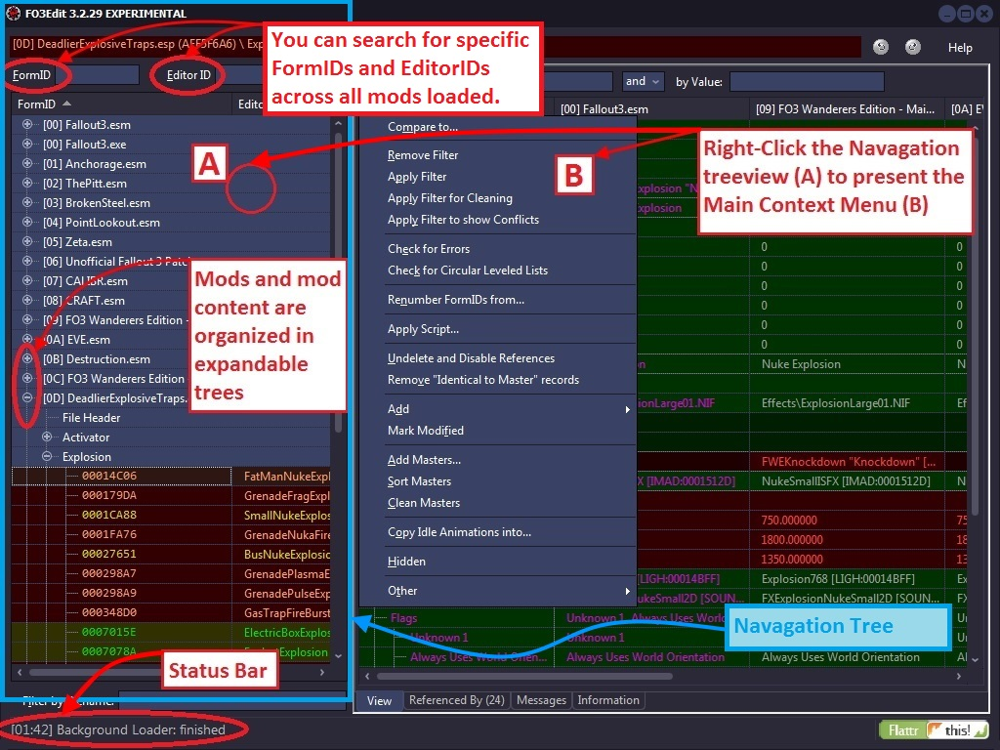
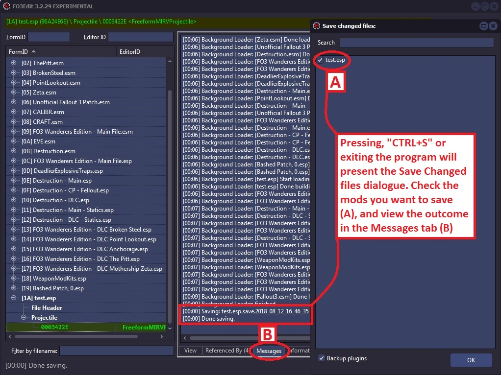

2. Overview
2.1 Introducing xEdit
xEdit is short for any version for example SSEEdit. xEdit is an advanced graphical module viewer/editor and conflict detector, with many additional functions that make it akin to a Swiss-army knife for modders and mod-authors alike. The primary function of xEdit is to help you spot conflicts between mods and resolve them, as well as to prepare your mod-list for a smooth run-time.
For the mod author xEdit provides the capability of viewing mod files at great depth, cleaning mod files of extraneous and duplicated records, merging mods together, changing ESPs to ESMs and scanning references in mod files for reach ability, form errors and specific references. These functions are very important to mod authors in the Fallout3 environment, as they will clean the mod of unintended changes, erroneous records and potential conflicts with other mainstream mods that players run.
Thus, whether you use mods to enhance your gaming experience or create mods for others to enjoy, using xEdit is both a wise investment in time and a beneficial act for the modding community. Authors who clean and prepare their mods with xEdit will experience fewer conflict and compatibility problems once published, and Players who de-conflict their load orders are much less likely to experience crashes and headaches. In general, the use of xEdit can only improve the inter-operability of all mods, and this can only be a good thing.
If I have not convinced you by now to invest an evening to learn how to use xEdit, then you should be sacked and have a live Nuka-grenade stuffed down your trousers. If however you wish to do the right thing by the modding community, grab a coffee and let's get to work! xEdit is not a difficult tool to use, but it does require that your CPU (brain) be involved in the process, and that is what this tutorial is designed to teach.
2.2 Acquisition and Installation
2.2.1 Downloading xEdit from the Nexus
xEdit works on Windows XP, Vista, Windows 7, 8, and 10. Other platforms or Windows simulators may or may not work and are not officially supported. xEdit is available for download from Nexus, one of the most outstanding sources for Bethesda content. Downloading from the TES5Edit Nexus.
The following page will display from the TES5Edit Nexus site. You will need to first click on, "Files" to display the list of xEdit versions. Once loaded, check the Version number in the upper-right corner (B) to ensure you download the most current revision. Then click on that revision of xEdit in the Main Files section (C).
Once you download the program, you will need an archive extraction tool that can handle 7-Zip files (.7z), such as 7-Zip, which is available at: http://www.7-zip.org/

Once the archive is open, you will need to extract the TES5Edit files into the right place for it to function. That place is the Skyrim\ directory, where the TESV.exe program is installed. Do Not install into the Skyrim\Data directory or the program will not function correctly. Also refer to 2.2.3 Windows Vista and UAC Security.
Technically you can run the xEdit exe from any location except the game's Data folder.
Previously all xEdit packages contained a special file of hard coded values not found in the main ESM or DLC. This is now part of xEdit, and the loose file is no longer required or included. All future releases will no longer include them.
If have used previous versions of xEdit, you can remove files like "Skyrim.Hardcoded.dat" as they are no longer needed.
2.2.2 DirectX and Requirements - [FO3Edit/FNVEdit/TES4Edit]
This does not apply to TES5Edit, SSEEedit, or FO4Edit!
With FO3Edit, FNVEdit, or TES4Edit installed let's review some system parameters and drivers that you will need in order to successfully operate the tool for Windows XP. xEdit will require current DirectX drivers from Microsoft. You can tell if your system is up-to-spec by simply launching the tool. If xEdit loads and presents you with a Master/Plugin Selector view, your good to go but you can skip this next step. If you get an error about d3dx9_*.dll not being installed, you need to update your DirectX to at least the March 2008 Version.
The most current DirectX version can be found here: DirectX End-User Runtime Web Installer;
Or here: DirectX End-User Runtimes Redistributable (install it after unpacking it).
Once DirectX is installed, you should be able launch the xEdit application successfully. If you still get errors, please report them to ElminsterAU.
2.2.3 Windows Vista and UAC Security
The UAC Security feature of Vista, Windows 7, 8, and 10 protects the Program Files directory from un-authorized access. Unfortunately, this also causes problems for xEdit and Bethesda games, and requires some manual intervention on your part to resolve. You have 3 options for dealing with UAC Security:
- Disable the UAC completely, but this will leave your system more vulnerable. (not recommended)
- Install your Bethesda game and xEdit in the C:\Games folder. For example, C:\Games\steamapps\common\Skyrim. Which is not controlled by UAC and will prevent conflicts. (recommended)
- Assign the "Users" group "Full Control" of the C:\Games folder (and subfolders) in UAC, which will prevent UAC from causing problems.
Any of the above options will work, though it is probably a better option to install your Bethesda game and xEdit into C:\Games directory and avoid the Program Files directory all-together. That leaves your system secure and averts the UAC problem for Bethesda fames.
If you are unable to get past the UAC restrictions, you may want to look for forums that people frequent for additional assistance with Windows. If all went well with the install, you should be able to successfully run xEdit.
2.2.4 Starting xEdit
When xEdit starts, you get a dialog to select which modules you want to load. Fallout 3, Fallout NV, and Oblivion use the time date stamp of the files to determine load order. Skyrim, Skyrim SE, and Fallout 4 use other files maintained by your mod manager. Load order cannot be changed with xEdit. If you need to change your load order, close xEdit and change the load order, then re-launch xEdit.
BOSS and LOOT will also sort mods if you are familiar with them.
- BOSS v2.3.2 by deathssoul (latest version)
- BOSS v2.3.0 by WrinklyNinja (last version by this author)
- LOOT v0.13.1 by WrinklyNinja
Select the mods that you want to load into xEdit, which can be all (for conflict detection) or just one if you're working on a specific mod-file. Once you have confirmed that dialog the selected modules will start loading in the background. The first time you run xEdit, depending on your system, it will take several minutes to load while it creates a cache of important data. xEdit subsequently loads much faster after building the cache.
The navigation tree view on the left side now shows all active modules in their correct load order. By navigating that tree view you can look at every single record in any of your modules. An example of a successful launch of xEdit is shown, though you may also see additional error information if errors were found during start-up.
2.2.5 Choosing a Theme
From the Title Bar
One way to select a theme is to Right Click the title bar and go to Theme. There are around 40 Themes to choose from. The one pictured in these docs is the Tablet Dark Theme.
The requirements are Desktop Window Manager, Themes services enabled, Desktop Composition, and an Aero Theme selected.
Note: Your screen will be blank if you previously selected a Theme but disabled any of its requirements.
From Options
You can also select a theme by bringing up the xEdit contextual menu, options, and select UI Theme.
2.2.6 xEdit Startup Error
When started it will automatically find your game's Data directory via the system registry (not by where it was installed). If you immediately get errors indicating that xEdit can't find the game's configuration files, it means one of two things. You moved the files to another directory or for games installed with Steam, you verified the integrity of your game cache.
As a reminder, this is what verifying your game cache looks like.

This is what the error would look like from FNVEdit.
After you click OK xEdit will finish loading and the messages tab will display the following.
If you moved the install it is recommended to move the files back to their original location or re-install the Game again. If you verified the game cache from Steam, run the game's official launcher. Below is an example of the Fallout 4 launcher.
2.3 Tour of User Interface
This section of the manual will take you on a brief tour of xEdit to introduce you to the different views and screens that you will be working with. This tour is designed for beginner-level users and does not discuss the functionality of the views at any depth just yet. The tour is recommended for all levels of user, especially if you have not used xEdit within the last several months as there have been many updates.
2.3.1 Master/Plugin Selection View [FO3/FNV]
The Master/Plugin Selection view is presented to you when xEdit is first launched and allows you to select/un-select the mods that you want xEdit to load. You can also Right-Click in open space to access more options, such as "Select All" or "Select None".
To change the load order of mods, close xEdit and open FOMM. Change the load order as desired, close FOMM and re-open xEdit.
There is an additional option you can use to quickly load a single mod – simply Double-Click on a mod file in the list. Double-clicking a mod will automatically un-select all other mod files and will load the selected mod file. It's a short-cut to loading single mods.
2.3.2 Navigation tree view

The Navigation tree view is the most heavily used in xEdit, containing both a higher-archical data-tree structure for all references as well as the main context menu. It also contains a status bar and search boxes for hunting-down specific FormIDs, EditorIDs, or by filename.
The main context menu (B) contains all the major xEdit functions, including Filters, Reference hunts, Error checking, Removing Extraneous content and many more. There are also several functions that do not apply to all games. We will discuss each of the important options in Main Context Menu in 2.3.3.
2.3.3 Main Context Menu
The main context menu is accessed by Right-clicking in the Navigation tree view, and acts as the main navigation and function selection point for xEdit. As such, much time and explanation are provided on how to utilize this menu, as well as a Reference Chart (shown below) to help illustrate what each function does.
There are some functions such as, "Generate Object LOD" and the "Set VWD for all REFR…" options that only work on Oblivion and should not be used with Fallout3. With some functions you will be presented with additional options, while with others such as "Check for Errors", the output is sent to the Messages Tab (or other tabs with other functions).
Each of these functions is described in-detail within the tutorial, and Quick Links to those detailed sections can be found in the list below for easy-access. Additional description is provided below for each function on the main context menu.
Compare To – Loads another module at the same load order index as the one under the cursor when you right clicked. Works very well to compare 2 different versions of the same module against each other.
Apply Filter – This function will present you with the Filter Menu, where you can select options on how you want to filter (restrict) the data shown in xEdit.
Remove Filter – This function will remove the current filter, so that all loaded-data will be presented and processed.
Building Reference Info – This function will build reference information for the currently select mod, which can be used after extensive changes are made.
Building Reachable Info – This function scans all references in a selected mod and will determine which are reachable (by the player in-game) from those that cannot ever be reached or accessed by the player. This function considers the totality of all loaded modules (looking only at the contents of the winning version of each record). So, it's possible for the reachable status to be different for a record, depending on which other modules you've loaded.
Checking for Errors – This function is used to check for reports any case where the information in the module file does not match the xEdit record definitions. This is Not a check for missing references, physical or data errors – that is done during the loading process with results available in the Messages Tab.
Checking for Circular Leveled Lists – Leveled Lists can reference other Leveled Lists, it's possible in this case to build a circular reference (with as little as 2 leveled lists directly referencing each other, or any number of additional leveled lists in the chain). When the game engine then tries to resolve that leveled lists down to an item/creature/NPC it can get caught in the endless loop and crash.
Renumbering FormIDs – This function will re-number all references in a selected mod file, starting from a number that you specify. This function does not in any way resolve conflicts and should be used only if you know exactly what you are doing (as it will result in incompatibilities with existing save games and any module which uses this module as a master). This function was implemented for the Better Cities team, so that they could assign non-overlapping FormIDs to each of their city specific esps, to prevent the need for changing FormIDs when merging the city-specific esps into the alternative "full" esp which contains all cities.
Un-deleting and Disabling References (Depreciated)– This function is used to un-delete any references in a selected mod file that were deleted in a previous edit, and instead mark them as "disabled". That will ensure that no conflicts occur if another mod depends on the object being deleted, and setting it to "disabled" will ensure that the original intent of the mod author (to remove the object from the game) is true as the player will never see a disabled object. More on this in the section on Mod Cleaning.
Removing "Identical to Master" Records (Depreciated)– This function will remove any record in a selected mod file that are identical to a record in the master files. This happens often when using the GECK, that some scripts or objects get marked as "modified" even though no changes were made. This bloats a mod file and makes it vulnerable to conflicts with other mods. More on this in the section on Mod Cleaning.
Applying Scripts Into – This function is used to apply a script(s) into a specific reference and writes the resulting new or override records into the specified module.
Creating a Merged Patch – This function is used to build the foundation of a merged patch-file, resulting in a new mod file using a name you select. More on this in the section on Mod Conflict Resolution.
Set VWD for all REFR with VWD Mesh in this file – This function only works with Oblivion and should not be used for Fallout3 mods under any circumstances.
Set VWD for all REFR with VWD Mesh copy as override - This function only works with Oblivion and should not be used for Fallout3 mods under any circumstances.
Generate Object LOD – This function only works with Oblivion and should not be used for Fallout3 mods under any circumstances.
Add (Reference) – What exactly that menu shows you is depending on the context, if you right click on a file node you will get a list of all groups that don't exist yet, if you right click on a group you get a list of all records that can be added to it and so on. And yes, this can be used to add new records, so you can basically build a mod from scratch with it.
Mark Modified – It will mark the currently selected node and all child nodes as modified. To minimize the chance that xEdit breaks something that it doesn't fully understand when saving, only records that are marked as modified are assembled field by field, sub record by sub record. Any record or even complete group that is not marked as modified is simply copied unchanged as a blob of bytes from the old module file into the newly saved one.
Add Masters – This adds a new master to the MAST sub record in the file header and correctly renumbers the FormIDs in the module. This function is also used to create an ESM/ESP pair from a single ESP plugin.
Sort Masters – This function will sort the global load order of master files to match the order of global load order.
Clean Masters – This function will scan a Plugin for Master ESM dependencies, determine if any Masters are un-used by the plugin and remove them.
Copy Idle Animations Into – This function is used to copy all the idle animations from one skeleton to another, which replicating monsters.
Hidden– This function hides the selected mod file(s) or references from further view/processing by xEdit.
2.3.4 View tree view - Information Tab
The Information Tab holds a textural version of the xEdit help guide, including basic information on mod conflict resolution and a legend on how to interpret the color scheme of text and background. You can reference this tab at any time as a cheat-sheet of sorts on how to use xEdit.
You can also capture any/all sections of the help information by Right-Clicking in the view-pane and selecting one of the textural options presented to you.
2.3.5 View tree view - Messages Tab
The Messages Tab acts like a running log-file of what xEdit is doing in response to your actions. When you first load xEdit, the Messages Tab is displayed by default so that you can watch the loading process in real-time. This is important as any Errors in the mod files such as missing references, missing files or dirty-edits to a mod file done in a hex-editor can all result in errors. Most of these will be harmless, but some are lethal, and you can see them all in the Messages Tab while they are loaded into xEdit.
Any actions that you take which result in changes to the files, such as Saving, will also print their output into the Messages Tab. Thus, it is important to check this tab often while working in xEdit, as there are cases in which a mod file won't save due to errors – and you want to know about that as soon as a problem occurs.
2.3.6 View tree view - References Tab
The References Tab is used to locate all occurrences of a reference such as Soda Bottles, Projectiles and Explosions. If you select a reference in the Navigation tree view, such as the "Glass Explosion" from the Destroyable Environments Mod by Bigkid7834, where every occurrence of that Glass Explosion in the in the game is displayed.
You can also Left-Click on any reference in the Referenced By view to present a copy/remove menu. Here you can literally delete the reference of the object out of the mod or copy it into another mod (perhaps a patch plugin, discussed in detail in the chapter on Conflict Detection and Resolution. These functions are especially useful for gaining a high-level understanding of what the mod contains, and where references can be found (a task which can be exceedingly difficult in the GECK).
You can also double click entries in that list to directly jump to that record (and switch to the View tab), you can then use the backward button in the top right corner or on your mouse (if it got more than 2 buttons).
2.3.7 View tree view - View Tab
The View Tab is used to display the details about any record that you click-select in the Navigation tree view. The View Tab is where most of the work of conflict resolution takes place. Each mod that has a copy/version of a selected record is shown in the view with its own Column. This way, all the mods that have a version of the same record can be shown side-by-side to more easily navigated and spot conflicts.
We discuss this view at depth in the chapter on Conflict Detection and Resolution, but for now, it's only important to understand its high-level function and how to navigate to it. As in the Referenced-By Tab, within the View Tab you can Right-click on any reference to receive an additional context menu. You can edit and remove any entry, as well as tell xEdit what kind of view your looking for; with or without de-conflicted rows (rows without a conflict of any kind).
2.3.8 Filter Menu
The Filter view is used for several purposes in xEdit; from conflict resolution to mod cleaning to reference viewing and reach ability data – all are achieved by activating a xEdit Filter. The Filters essentially work to restrict what data you see in xEdit to just what you want to see or are working on, and in some cases, data is parsed (such as in conflict detection). When trying to de-conflict a list of mods, the Filter is used to show you only the records that show a conflict – leaving the un-conflicted rows invisible.
As you can see there are dozens of different options you can select in the filter view. Not to worry though, we will give you the correct filter options to select for each of the functions you perform with xEdit. For now it is only important to recognize this as the Filter View, which gives you unprecedented viewing access to mods files. You can Apply and Remove Filters from the main context menu.
2.4 Saving and Confirmation

You can save your changes at any time by pressing, "CTRL" and "S", and when you exit xEdit (if there are changes to save). If you have not saved for a while, xEdit may also remind you that it's a good time to save. When the, "Save changed files" window is presented, click on the mods you want to save.
The output of each save is shown in the Messages Tab. It is important to check this, as sometimes errors in a mod file can prevent you from successfully saving it.
2.5 Quick Tips and Shortcuts
There are several important keyboard short-cuts that can make your usage of xEdit more efficient with less keystrokes for some common functions.
- Ctrl+S: Opens the Save Files dialog.
- Ctrl+click on a FormID in the right-side pane: Jump to the selected Record in the tree view.
- Double click on an entry in the Referenced By tab: Jump to the selected Record in the tree view.
- Press F2 with the field selected in the View tree view: Edit the field with the In-Place Editor.
- Press F2 with the record selected in the Navigation tree view: Edit the FormID of the selected Record.